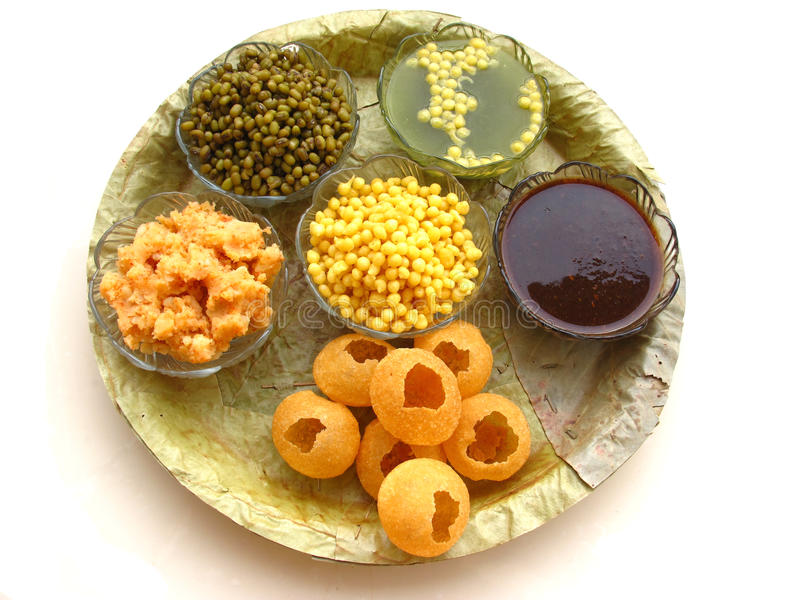

Panipuri

INGREDIENTS
- POTATOES
- ONION
- CORIANDER
- CUMIN POWDER
- CHAAT MASALA
- RED CHILLI POWDER
STEPS TO MAKE IT !
- Rinse coriander and mint leaves in water and take all the ingredients of pani.
- Add mint leaves, coriander leaves, green chilli, ginger and lemon juice (lemon juice is added while grinding to prevent the mint leaves from turning dark) in the small chutney jar of a grinder.
- Grind until smooth paste (if required, add 1/4 cup water while grinding).
- Grind until smooth paste (if required, add 1/4 cup water while grinding).
- Take mashed potato, kala chana, red chilli powder, cumin-coriander powder, chaat masala powder, coriander leaves and salt (add only if you have not added while boiling the potatoes and chana) in a bowl.
- Mix them together with a spoon. Masala is ready.
- Mix them together with a spoon. Masala is ready.
- Stuff it with masala (more or less, as you like). Sprinkle onion and sev over it and drizzle a drop of date tamarind chutney over it. Take pani-puri water in a medium bowl. Dip each puri in water and enjoy…
HOME